Kyle Offutt
Hi, I'm Kyle
About This Album
The 2020's were a rollercoaster of a decade. My 2019 prequel, saw me running the kitchen by myself for the entire summer, followed by my mother getting laid-off from her manufacturing job, in time for Christmas. By 2020's open I my work relationship remained soured, leading me to look for new work. Eventually, despited being delayed by COVID-19, I would begin temp work with MCPc. For the next year my work would be steady for the duration of my employment. At the outbreak of 2021, COVID would work its way through my father's family, ending with the death of my grandfather. A few months later, my temp position would complete its term.
Faced with a question of my future, I decided the time was then for a vaction, my COVID vacation. Thus, with a month of planning, I had planned a week and a half trip from Boston, MA to DC and Charleston, SC. An added stop in Philly would latter expand it to two weeks. Using an Amtrak vaction deal, 10 trains for $300, I would explore those cities and their various museums. My most specific targets being the USS Constitution, Yorktown, and New Jersey.
Boston, MA
USS Constitution & USS Cassin Young
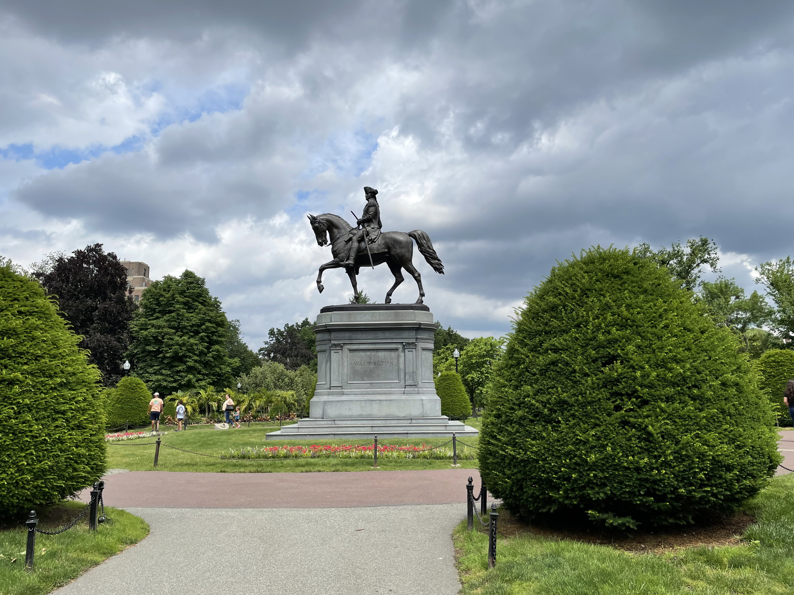


Washington, DC
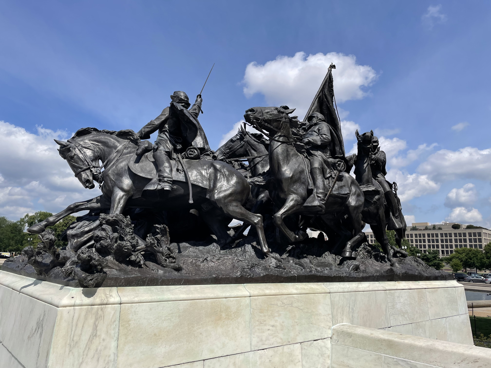 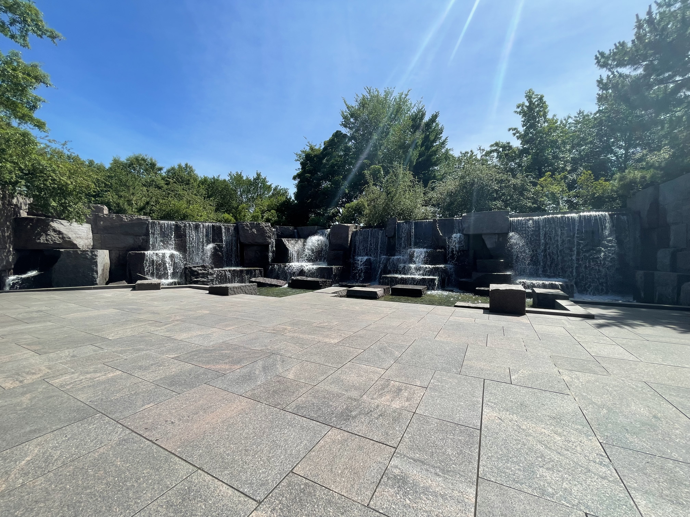Baltimore, MD
National Aquarium
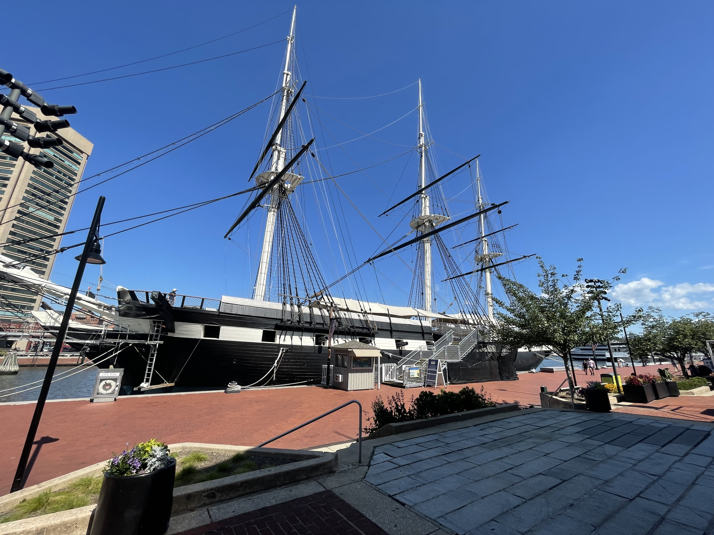Charleston, SC
USS Yorktown, USS Laffey,
& USS Clamagore
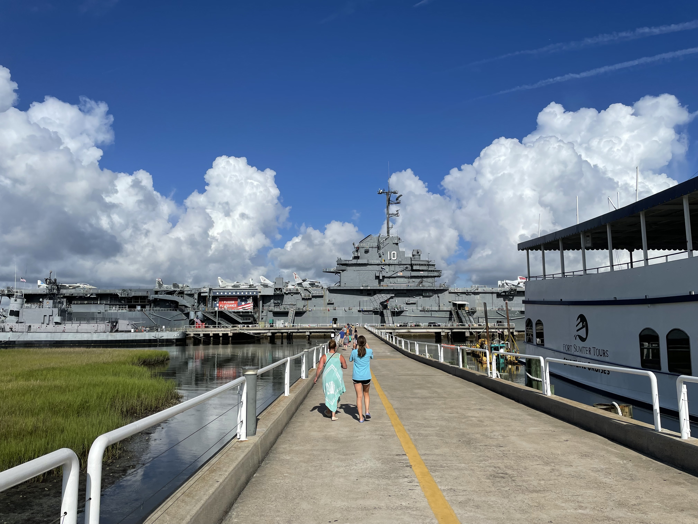
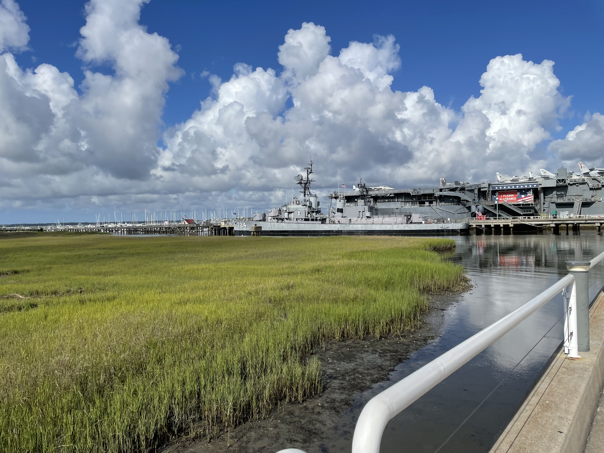
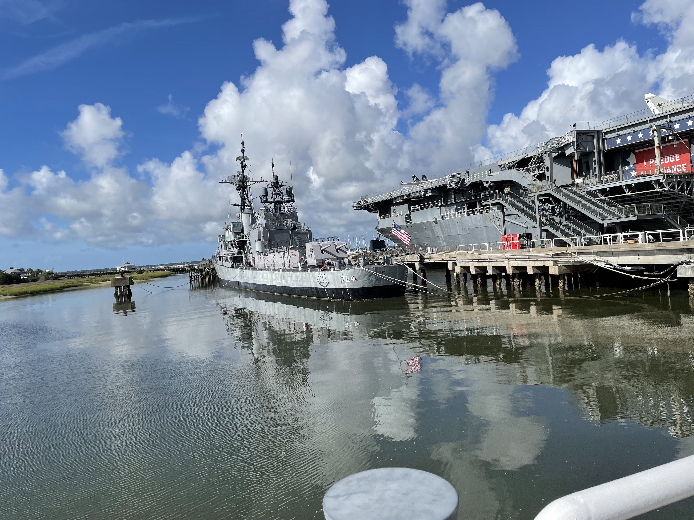
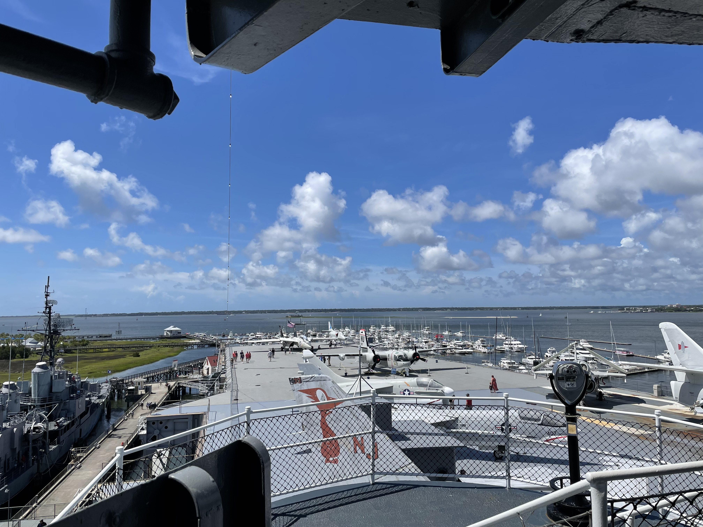
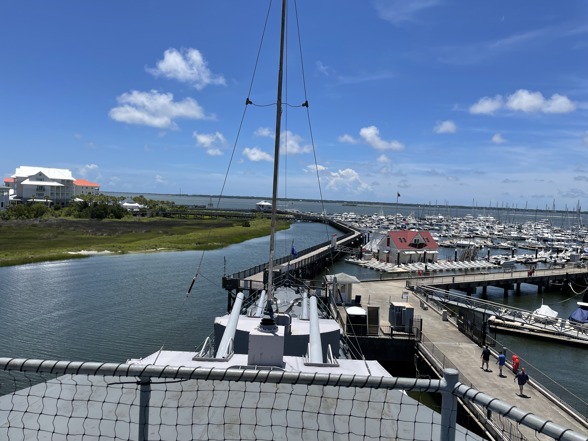
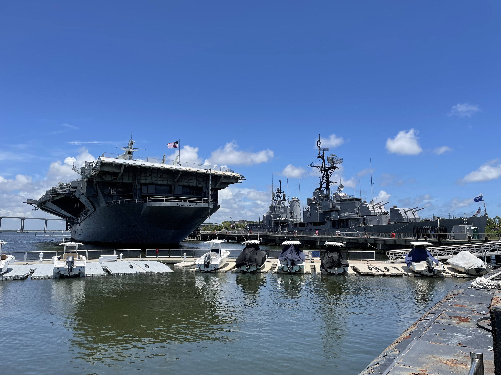
Philadelphia, PA
USS New Jersey
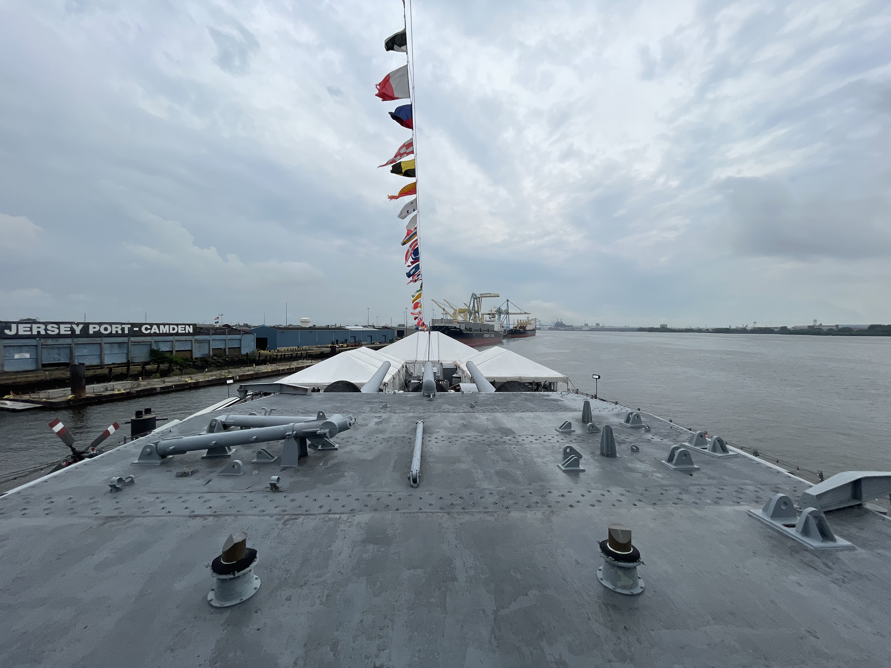 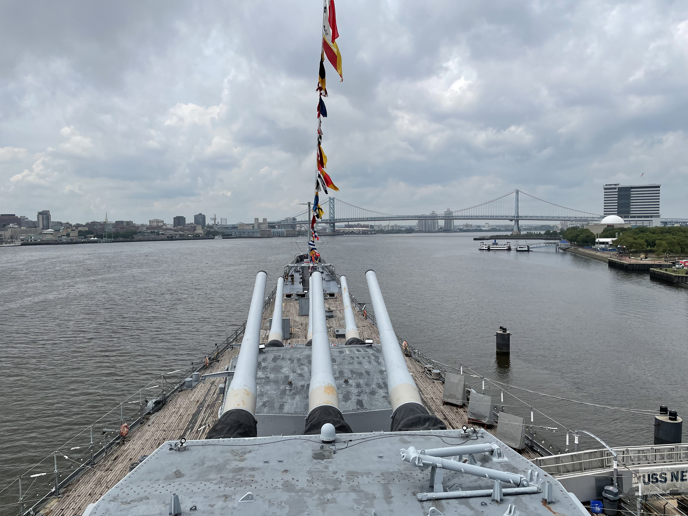 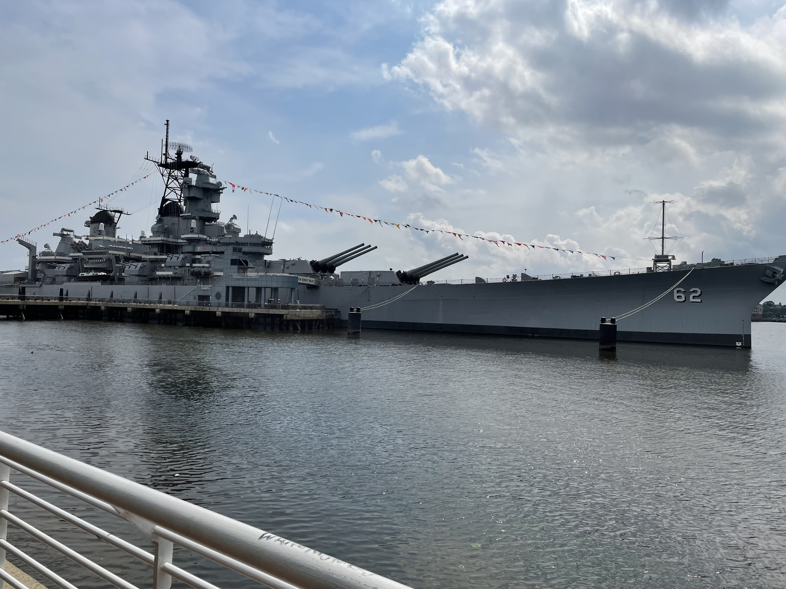Kelly's Island, OH


Cameras Used in this Collection
iPhone 12 mini
My current iPhone, also my longest used camera and phone. I bought it in 2021 expecting the mini line-up to be a one-off. This phone would be my main camera for a trip across the US East Coast and another trip to the DC area for a cousin's wedding.